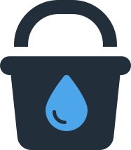
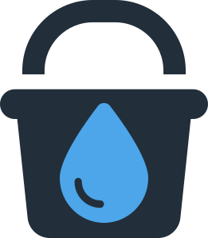

charity: water needs generous donors to collect pure water and donate to those in need. Collect 100 pure droplets to win the game! If 3 dirty droplets fall in the bucket, you lose the game. Click "Start" to begin!
Choose your preferred difficulty
Score: 0
Lives: 3

Oh no! The water is too dirty to donate to charity: water!

Yay! You collected enough pure water to donate to charity: water!